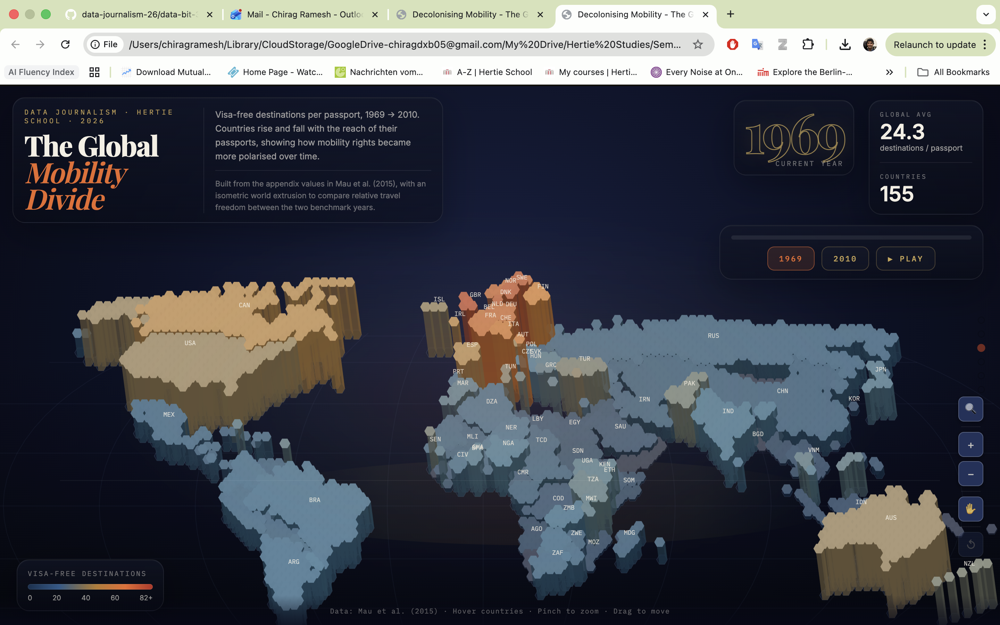

Chirag Ramesh
Data journalism · Berlin

The Global Mobility Divide
How visa-free travel rights diverged between OECD and African nations from 1969 to 2010.
View piece
German Visa Appointment Wait Times
Interactive scatter chart exploring visa appointment availability and wait times across countries.
View piece
2025 Heat Analysis
Examining heat patterns and wet-bulb temperature trends across cities using processed climate data.
View piece